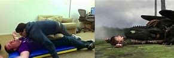

üé¨ Production
*How to Train Your Dragon* was directed by Chris Sanders and Dean DeBlois, known for their work on *Lilo & Stitch*. The film is based loosely on the book series by Cressida Cowell, though the story and characters were heavily reimagined to create a more cinematic and emotionally impactful experience.
The movie was produced by DreamWorks Animation and released in March 2010. It quickly gained critical acclaim for its storytelling, visuals, and musical score.
üé® Animation & Visuals

The animation team pushed boundaries to create stunning flight scenes and emotional expressions, especially for Toothless, who doesn’t speak. Animators drew inspiration from cats, dogs, birds, and reptiles to make the dragons feel grounded in real animal behavior.
Cinematographer Roger Deakins, known for his work on *Skyfall* and *Blade Runner 2049*, was brought in to help advise on lighting and camera movement, giving the film a more cinematic look than most animated movies at the time.
üéôÔ∏è Voice Cast

- Jay Baruchel as Hiccup
- Gerard Butler as Stoick the Vast
- America Ferrera as Astrid
- Craig Ferguson as Gobber
- Jonah Hill as Snotlout
- Christopher Mintz-Plasse as Fishlegs
- T.J. Miller & Kristen Wiig as Tuffnut & Ruffnut
The cast was praised for bringing both humor and heart to their roles, especially in capturing the awkward but sincere energy of Hiccup’s journey.
üìΩÔ∏è Fun Production Details

- Toothless’s design was inspired by cats, panthers, and even axolotls for his expressions and movement.
- The flying scenes were created using virtual cameras to simulate real aerial cinematography.
- Composer John Powell's score, featuring a blend of Celtic and orchestral elements, won multiple awards and is considered one of the best animated soundtracks.
- The film took over three years to produce, with hundreds of animators, artists, and sound engineers involved.